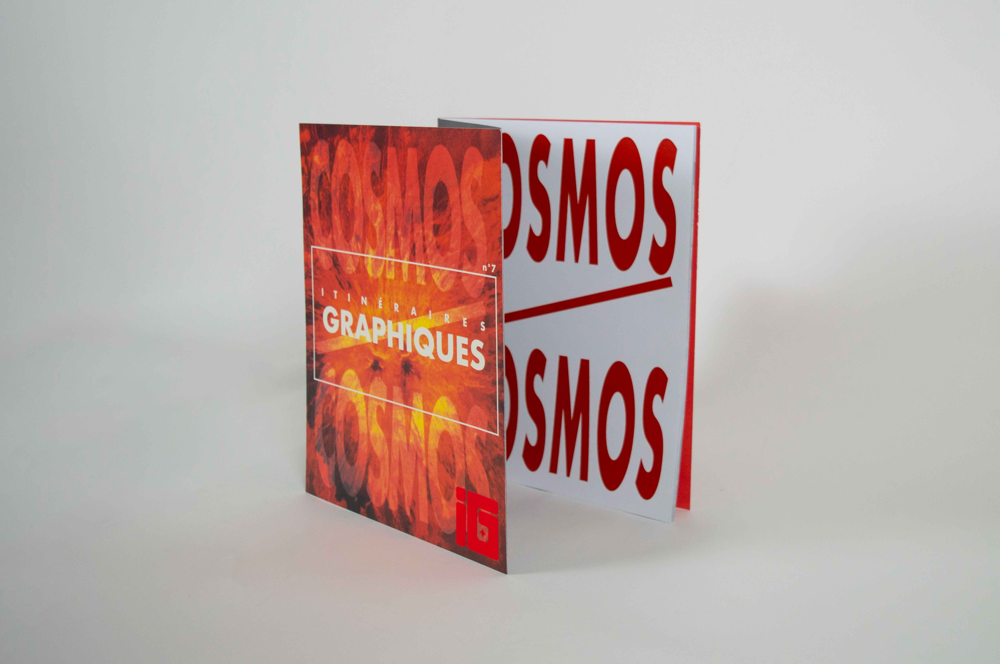
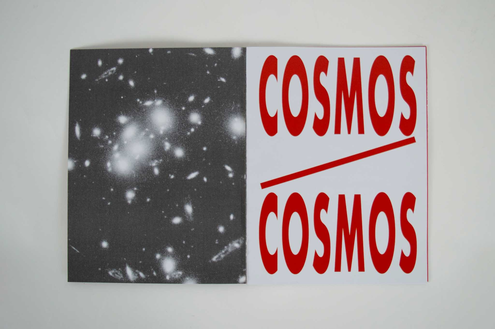
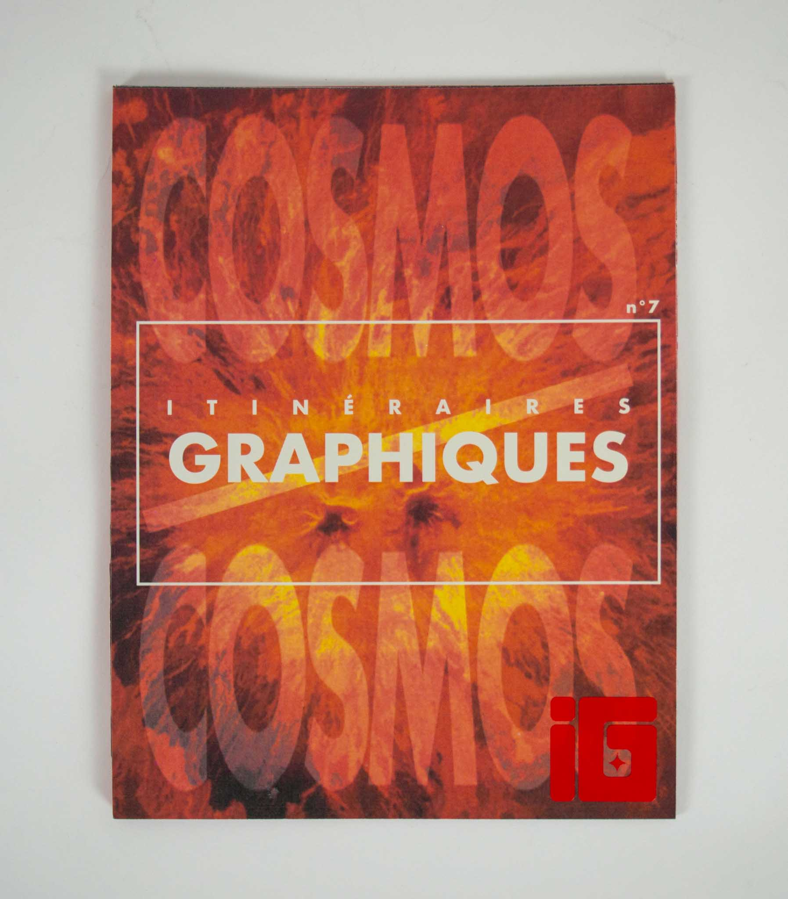
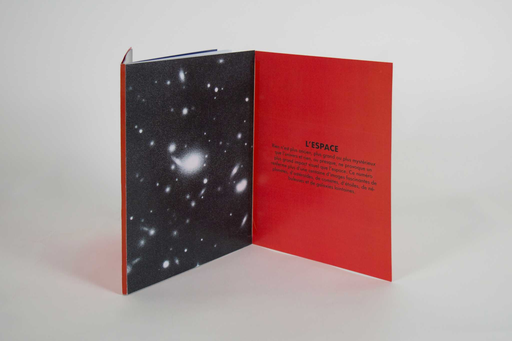
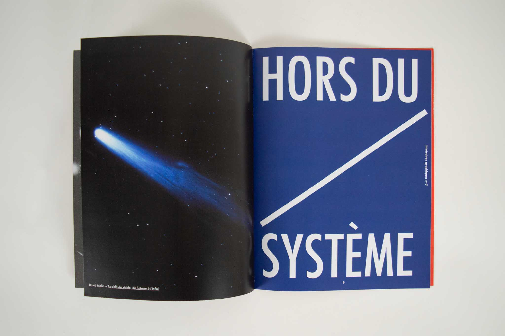
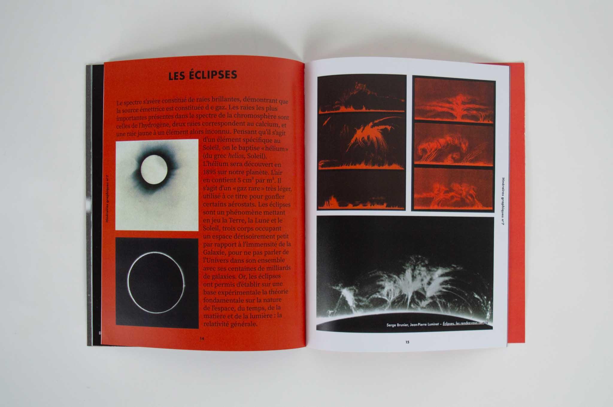
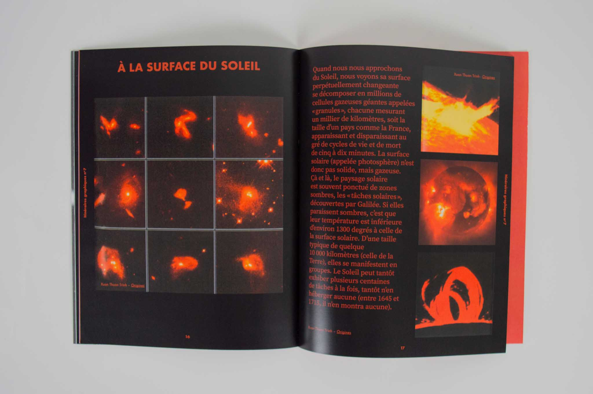

Numéro 7 de la revue "Itinéraires Graphiques" autour de l’espace, du cosmos. Représentations graphiques et textuelles à partir de ressources du Centre de Documentation de l’ÉSAD d'Amiens. Mise en page et reliure inspirées du FOAM Magazine.
Couverture dépliable, dos carré collé, 120g, 24 pages, 23 x 30 cm






